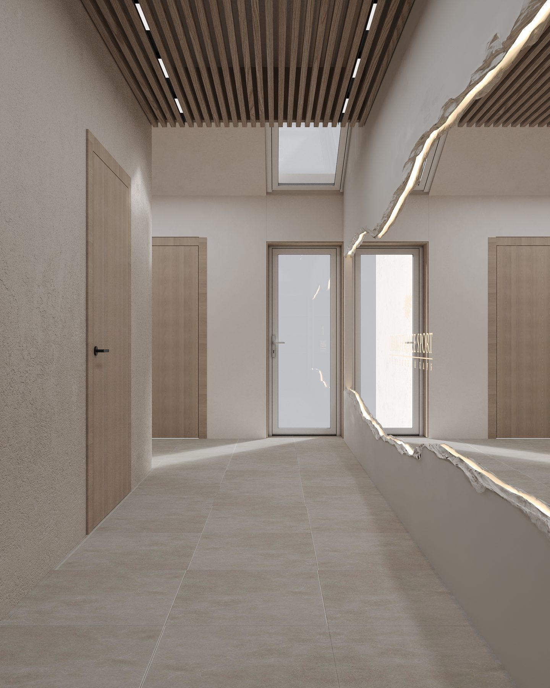

Как выбрать фитнес-клуб
во Всеволожске
Хороший спортивный клуб — это не только тренажёры. Это атмосфера, в которую хочется возвращаться, тренеры, которым доверяешь, и сервис, который экономит ваше время. Собрали семь критериев, на которые стоит обратить внимание при выборе фитнес-клуба во Всеволожске.
1. Оборудование
Современные тренажёры ведущих брендов (например, Technogym) — это не вопрос престижа, а вопрос безопасности и эффективности тренировок. Обратите внимание, насколько парк оборудования полный и ухоженный, есть ли свободные зоны для функционального тренинга.
2. Тренеры
Профильное высшее образование, спортивные звания и международные сертификаты — признак того, что с вами будут работать профессионалы. Хороший тренер составит программу под ваши цели и состояние здоровья, а не «по шаблону».
3. Просторные залы без очередей
Комфорт во время тренировки напрямую зависит от площади и зонирования. В премиальных клубах залы просторные, а количество клиентов сбалансировано так, чтобы не приходилось ждать своей очереди к снаряду.
4. Приватность и безопасность
Закрытая охраняемая территория, собственная парковка и продуманный контроль доступа особенно важны для тех, кто ценит личное пространство и спокойствие.
5. Разнообразие направлений
Когда под одной крышей собраны тренажёрный зал, бассейн, теннис и студия пилатеса, проще поддерживать баланс нагрузок и не уставать от однообразия. Это удобно и для всей семьи.
Премиальный клуб — это место, где о вас заботятся ещё до того, как вы об этом попросили.
6. Сервис и атмосфера
Просторные раздевалки, дизайнерский интерьер, современная вентиляция и чистый воздух — детали, из которых складывается ощущение премиальности. Именно сервис превращает поход в зал в приятный ритуал.
7. Расположение
Идеально, когда клуб находится в 15–30 минутах от дома: так тренировки легче вписать в распорядок и не бросить через месяц. Для жителей Всеволожска и окрестных посёлков это особенно актуально.
Спортивный клуб «Гранд-Палас Спорт» отвечает всем семи критериям: премиальное оборудование, тренеры-профессионалы, закрытая территория 10 000 м², пять направлений спорта и сервис высокого уровня. Приезжайте на экскурсию — и оцените сами.